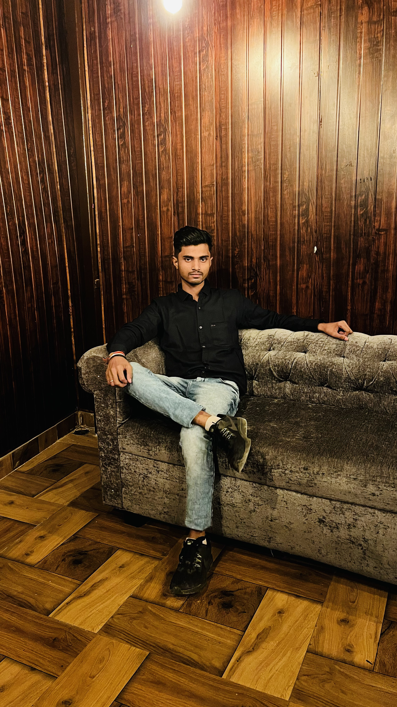

2000-2023
"Technology is a usefull servant but a dangerous master."
Ashwik Kalwar (May 20 ,2000 - March 10, 2023) was an student in United INstitute of Technology. He wants to became a Software Developer but this time he is no more. He is the founder of coding fact club in the institution and growing for the future scope. Many developer were joining this group but he left all his members for whole life. He was spend many of the time with group members to resove ther queries. May God give him pease.